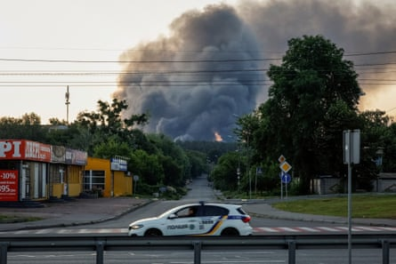

At least 14 people have been injured in an overnight drone attack on Kyiv that also damaged railway infrastructure, and set buildings and cars on fire throughout the city, the mayor has said, while separate explosions were reported in a city near Moscow.
The attack was the latest in a series of Russian airstrikes on Kyiv that have intensified in recent weeks and included some of the deadliest assaults of the war on the city of three million people.
Twelve of the injured were taken to hospital and two were treated at the scene, Kyiv mayor Vitali Klitschko said in a post on Telegram. Damage was recorded in six of Kyiv’s 10 districts on both sides of the Dnipro River, which bisects the city, and falling drone debris set a medical facility on fire in the leafy Holosiivskyi district, Klitschko said.
He said two fires had broken out in Svyatoshynskyi district in the west of the city when drone debris fell on a warehouse, while debris from another drone set fire to cars in the courtyard of a 16-storey residential building.
Smoke billows over Kyiv after a Russian drone attack. At least 14 people were injured in the assault, the city’s mayor said.Photograph: Alina Smutko/Reuters
Drones also triggered two fires on a roof and in a courtyard in buildings in the neighbouring Solomanskyi district, and a residential building in the Shevchenkivskyi district, he said.
Witnesses reported a string of explosions and constant barrages of fire as air defence units tried to down the drones. Video on local media showed residents bedding down in subway stations in anticipation of further attacks.
Ukraine’s state-owned railway Ukrzaliznytsia, the country’s largest carrier, said on Telegram that the attack on Kyiv damaged railway infrastructure in the city, diverting a number of passenger trains and causing delays.
US President Donald Trump said that a phone call with Russian President Vladimir Putin on Thursday resulted in no progress at all on efforts to end the war in Ukraine, while the Kremlin reiterated that Moscow would keep pushing to solve the conflict’s “root causes”.
A decision by Washington earlier this week to halt some shipments of critical weapons to Ukraine prompted warnings by Kyiv that the move would weaken its ability to defend against intensifying airstrikes and battlefield advances.
Ukrainian President Volodymyr Zelenskyy said on Thursday that he hopes to speak with Trump on Friday about the supply of US weapons.
Ukraine, meanwhile, launched a drone attack on the city of Sergiyev Posad near Moscow, injuring at least one person and with explosions reported in at least four locations, the head of the district Oksana Yerokhanova said early on Friday.
“I ask everyone to remain calm, not to approach the windows, not to photograph the work of the air defence,” Yerokhanova wrote in a post on the Telegram messaging app.
Another drone attack on the southern Russian region of Rostov region killed at least one woman, Yury Slyusar, the acting governor of the region, said on Telegram early on Friday.
With Reuters